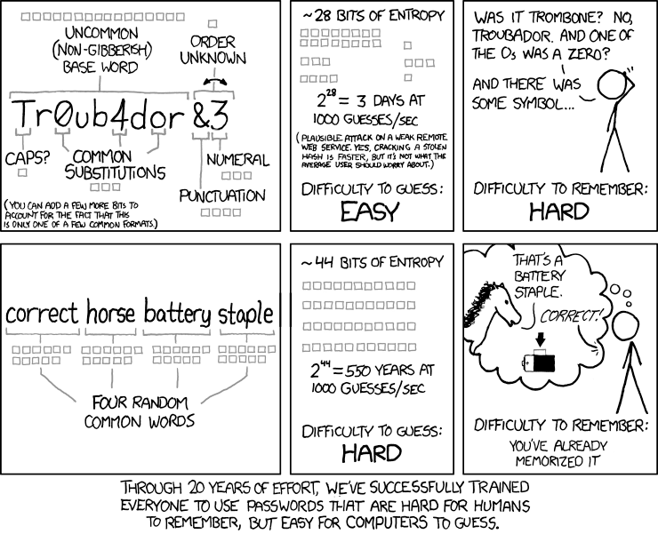

Self-Hosting a Vaultwarden Password Manager
Source: Vaultwarden Github
Password vaults are a convenient and secure way to manage multiple passwords. As data breaches become more and more common, security guidance changes lead to an inevitable mishmash of credentials that are impossible to remember when not used daily. The logic behind constantly-evolving password guidelines is beyond the scope of this guide, but recent word from NIST on password vaults recommends their use:
Verifiers SHALL allow the use of password managers and autofill functionality. Verifiers SHOULD permit claimants to use the “paste” function when entering a password to facilitate password manager use when password autofill APIs are unavailable. Password managers have been shown to increase the likelihood that subscribers will choose stronger passwords, particularly if the password managers include password generators
This guide walks through setting up a lightweight, locally-hosted password manager that allows the user (or users) to keep their accesses secure without needing to perform superhuman feats of memorization. It is written assuming the reader has a fully configured WireGuard VPN server on their home network, with all local traffic handled by the VPN specifically. This is necessary for security, not just for Vaultwarden; it’s generally much simpler and safer to stand up your devops infrastructure when you don’t have to open ports to the entire internet.
Background
A password vault (or password manager) is a secure, encrypted digital storage system for username and password combinations. Remembering one password is much simpler than having to remember multiple. Why NIST took so long to come to this conclusion is out of scope for this guide, but feel free to enjoy others’ discourse on the topic.

Source: xkcd 936 (adapted for light/dark mode)
There are several password managers to choose from; Bitwarden is a strong contender in the space, and I highly recommend it for the average person or enterprise. It is open source, has weathered security audits, and you can even self-host it. While I personally dislike hosting anything on the cloud, I don’t have an issue with their model from a security perspective; your data is encrypted locally before it’s even sent to their servers, so even Bitwarden themselves could not access your information.
Some downsides exist, though; it’s a resource hog when hosted locally, and resources matter when you keep stacking services on your home Debian device. The average user does not need the scalability and infrastructure that it provides. Additionally, some services such as autofilling passwords require a paid subscription, even when self-hosting Bitwarden.
Thus, this guide settles on Vaultwarden. Vaultwarden is a lightweight re-write of Bitwarden in Rust. It uses much less CPU and RAM (~50MB to Bitwarden’s ~1-2GB), and as a bonus it is easier to set up. The process is explained below; the length of this write-up should speak to its simplicity.
Prerequisites
- WireGuard VPN, configured to handle local address traffic.
- Linux server (Debian, can be the same machine hosting the WireGuard VPN).
- Basic command line familiarity.
Initial Setup
On the server meant to host the Vaultwarden instance, you will need to install podman and set up the necessary folder structure in your home directory. You will also need to set up a self-signing certificate (acceptable since we are on a VPN). Note that docker is also an option and most guides reference it; I prefer podman since it is more secure by not requiring root access and not having a single point of failure (dockerd).
First, find your server’s IP address. You will need to replace 192.168.1.100 below with your server’s IP address. With the correct IP, run the following to execute the podman install, folder structure creation, and certificate generation:
sudo apt update && sudo apt upgrade -y
sudo apt install podman podman-compose git -y
mkdir -p ~/vaultwarden/{data,config,ssl}
cd ~/vaultwarden
echo "ADMIN_TOKEN=$(openssl rand -hex 32)" > .env
chmod 600 .env
openssl req -x509 -newkey rsa:4096 -keyout ssl/private.key -out ssl/certificate.crt -days 36500 -nodes -subj "/CN=192.168.1.100"
chmod 600 ssl/private.key
chmod 644 ssl/certificate.crt
The certificate expires in 100 years (36,500 days). Expiration cannot be disabled completely, but if you have it set for a year your password manager may break and you could waste hours debugging the self-signed certificate you’ve since forgotten about.
You may also need to open the HTTPS port on your firewall if you use UFW. Run sudo ufw status and if it shows as active, run:
sudo ufw allow from 192.168.1.0/24 to any port 8443
Configuration
Still within the ~/vaultwarden folder, create docker-compose.yml by running the following (again, replace 192.168.1.100 with the correct IP address):
cat > docker-compose.yml << 'EOF'
version: '3.8'
services:
vaultwarden:
image: docker.io/vaultwarden/server:latest
container_name: vaultwarden
restart: unless-stopped
env_file:
- .env
environment:
WEBSOCKET_ENABLED: 'true'
SIGNUPS_ALLOWED: 'true'
DOMAIN: 'https://192.168.1.100:8443'
ROCKET_TLS: '{certs="/ssl/certificate.crt",key="/ssl/private.key"}'
LOG_LEVEL: 'warn'
EXTENDED_LOGGING: 'true'
volumes:
- ./data:/data
- ./ssl:/ssl:ro
ports:
- "8443:80"
- "3012:3012"
EOF
Now run the container and check status:
podman-compose up -d
podman ps
You should see the docker.io/vaultwarden/server:latest container running.
Account Setup
Access the admin console by typing https://192.168.1.100:8443 (replace the IP address) into a browser. You will be prompted to create the username and password, and then download the Bitwarden password manager addon. It works perfectly with Vaultwarden and autofills your passwords, so this is highly recommended.
Next, configure it for your self-hosted server when logging in by selecting ‘self-hosted’ at login rather than ‘bitwarden.com’. Use the admin console URL/port again, and log in using the login created earlier.
Automated Start/Restart of Server
The last step here is to ensure Vaultwarden starts back up if the server reboots or has a power failure. This is also very simple to set up by running the following:
systemctl --user enable podman.service
sudo loginctl enable-linger $USER
podman generate systemd --new --name vaultwarden --files
mkdir -p ~/.config/systemd/user
mv container-vaultwarden.service ~/.config/systemd/user/
podman-compose down
systemctl --user daemon-reload
systemctl --user enable container-vaultwarden.service
systemctl --user start container-vaultwarden.service
systemctl --user status container-vaultwarden.service
podman ps
The above code sets up auto-start configuration and generates a systemd file for the Vaultwarden service, then brings the Vaultwarden container down to switch over from podman-compose management to systemd management. The last two lines check status; if these look good, you are done.
Conclusion
You should now be able to use Vaultwarden in the browser of your choice. It should (when logged in) prompt you with the option to save passwords, and autopopulate them as needed. I hope this was helpful; if you notice any issues with this guide or process, please feel free to reach out or leave a comment.
If you found this useful, please cite this as:
Rothe, Joshua A. (Mar 2026). Self-Hosting a Vaultwarden Password Manager. https://portfolio.rothellc.com.
or as a BibTeX entry:
@article{rothe2026self-hosting-a-vaultwarden-password-manager,
title = {Self-Hosting a Vaultwarden Password Manager},
author = {Rothe, Joshua A.},
year = {2026},
month = {Mar},
url = {https://portfolio.rothellc.com/blog/2026/setting-up-a-vaultwarden-password-manager/}
}
Enjoy Reading This Article?
Here are some more articles you might like to read next: